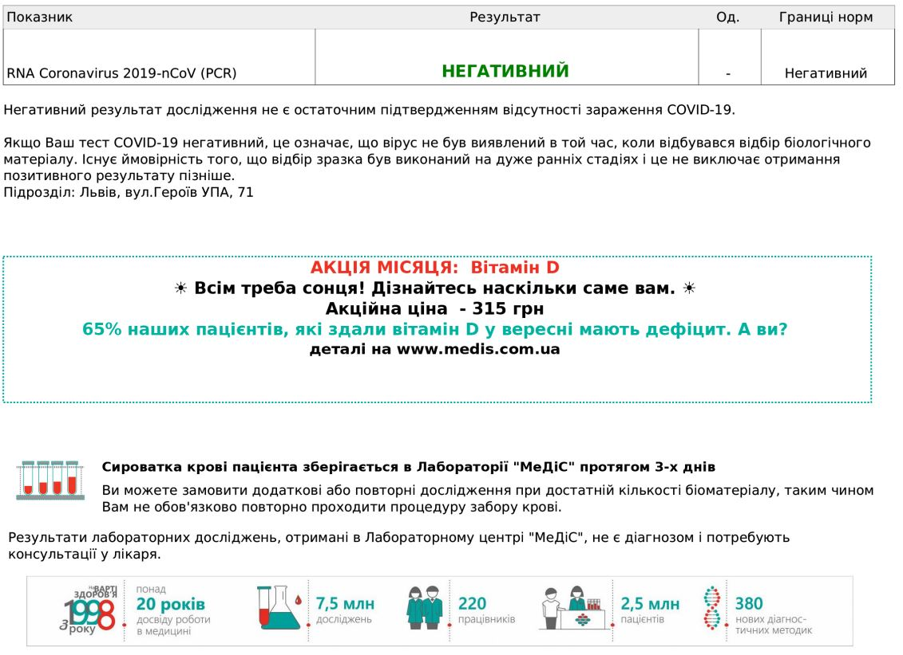

Цей аркуш виготовлений з переробленеої вторсировини.
Завдяки використанню ЕУО-бланків, ми з Вами оберігаємо дерева.
Як Вам така ідея? Залишіть, будь ласка, свій відгук
на нашій гарячій лінії або відскануйте QR-код =>>
ПІКЛУЄМОСЬ РАЗОМ про ЗДОРОВ'Я ПЛАНЕТИ!
Ліцензія МОЗ України серія АЕ №571840 від 25.12.2014
| Прізвище, ініціали пацієнта: | Галушко Степан Степанович |
| Дата народження: | 25.10.1977 Стать: чол. |
Гаряча лінія тел. 0 800 50 17 50
Лабораторія (07:00 - 22:00) тел. 032 260 17 17
79035, м. Львів, вул. Некрасова, 35В
info@medis.com.ua
Результати дослідження №
213927
від20.10.2021 17:20
Час виконання:

20.10.2021 17:20
Сторінка 1, Сторінок 1